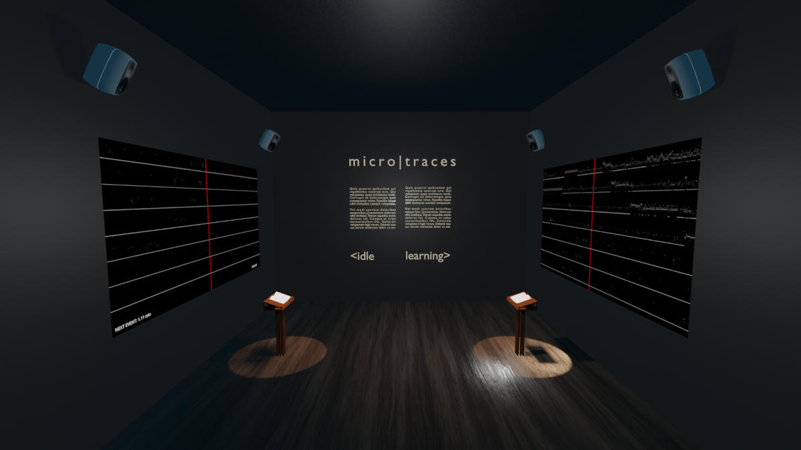
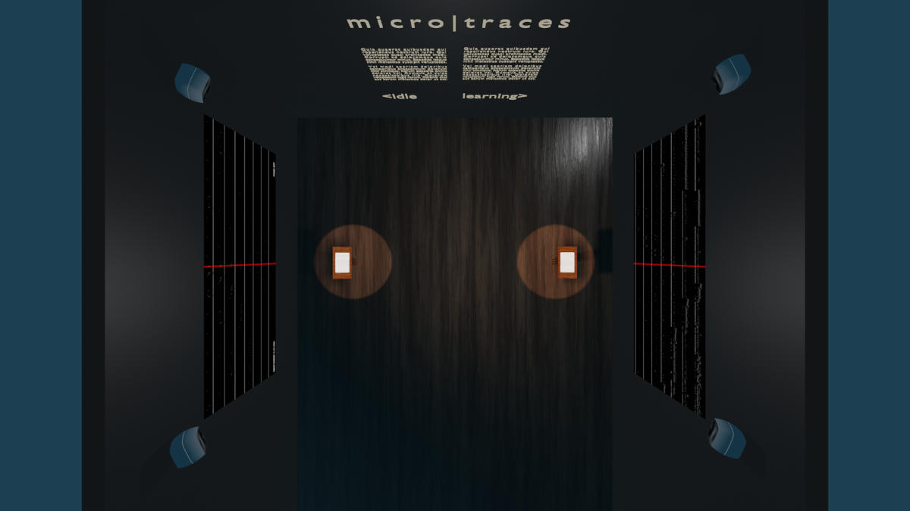
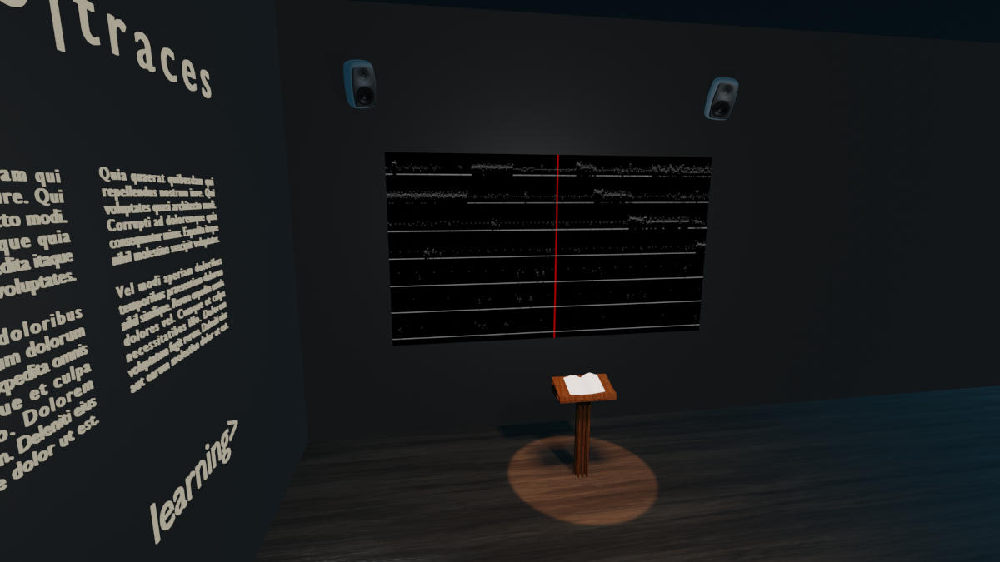

micro | traces
micro | traces is an audiovisual installation that scales software time down to human perception, to let visitors experience the scale shift that exists between the time of computers and the time of human senses.
visual mockups
  sonic mockup
In the mockup above, consisting of snippets from the related work the sound of software tranquillity, the left channel represents the idle trace and the right channel the learning trace.
Short description
micro | traces is an audiovisual installation that scales software time down to human perception, to let visitors experience the scale shift that exists between the time of computers and the time of human senses.
One second of software activity in the software core of a laptop idle or learning is slowed down by a factor of 170 000 and displayed in three ways: a) sonically, projected into the room, b) as a live graph showing the current progress, projected on the wall by the speakers, and c) as a printed textual copy of all the events in human readable format, presented on bookstands.
As computers have gotten faster, the scale of their operations have moved further and further outside the limits of human perception. High frequency combined with human creativity formalized into source code supports the emergence of incredibly sophisticated processes, such as the instantaneous world-wide communication, or varied forms of artificial intelligence.
micro | traces builds on the software art tradition and the computational sublime to use recorded software activity as raw material.
How does your proposal respond to the theme of the open call?
micro | traces explores the question "How might micro scales that operate outside of human perception transform and construct new representations of society, culture, and the environment?" by expanding and providing human access to one second of core software activity.
The time of computers is remotely related to the time of humans. In 1945, the first computer, a.k.a ENIAC, performed 500 floating point instructions per second. This was a frequency of computation out of human reach. Since 1945, the speed of computers has not ceased to increase. In 2022, the most simplest smartphone performs millions of operations per second, and supercomputers perform trillions of operations.
As computers have gotten faster, the scale of their operations have moved further and further outside the limits of human perception. High frequency combined with human creativity formalised into source code supports the emergence of incredibly sophisticated processes, such as the instantaneous world-wide communication, or varied forms of artificial intelligence. Software, the fluid execution of source code [McLean02] on blazingly fast computers, is intangible and not accessible to direct human perception. While the smartphone is empowering millions of people to instantly find knowledge, communication and escapism, software is taking command [Manovich08], hidden behind the fundamental inaccessibility of computer operations.
Software art [Cramer 01] has explored this computational sublime [McCormack01] in the last two decades, through various new media. Among the artworks grounded into software, micro | traces is particularly inspired by the work of Ryoji Ikeda. Ikeda has explored the high frequencies of computers, code and the fluidity of executions with his series of work entitled Continuum [Ikeda18]. These installations immerse the visitor into large-scale audiovisual installations that physically convey the unthinkable speeds at which data collaborate computers to let software emerge.
micro | traces dramatically slows computer time to let visitors feel the microscopic operations of modern software. Turning 1 second of software into 47 hours, each individual software operation becomes accessible to human senses. This 170 000 times slow down makes micro | traces an "exploration" device, as defined by Fourmentraux [Fourmentraux10]. The visitors explore the microscopic events that are performed in dense clusters of sound, sparse beeps and separated by long sequences of silence.
micro | traces is a diptych, where we stage the dramatic slow down of two radically different moments of software. The first part of micro | traces is based on the recording of 1 second of a regular, consumer grade laptop that is not running any user application. In order to adapt this one second of a laptop doing nothing to human perception, it is necessary to magnify everything by a factor of 170 000. The second part of micro | traces is based on the recording of 1 second of the same laptop, while it is training a neural network (‘learning’). This one second of a laptop learning is magnified by the same factor of 170 000, turning the intense software into a dense long form sonic experience. The two parts of micro | traces are audiovisual projections of software that run for 47 hours each, contrasting a calm 1 second of a laptop doing nothing to a dense and sublime 1 second of a laptop in the process of learning.
- [Cramer 01] Software art, Florian Cramer & Ulrike Gabriel, American Book Review, issue “Codeworks”(Alan Sondheim, ed.), 2001
- Structure in art practice: technology as an agent for concept development. Ernest Edmonds, 2002. Leonardo, 35(1), pp.65-71.
- [Fourmentraux10] Les Dispositifs du Net Art, Jean-Paul Fourmentraux, 2010
- [Ikeda18] Continuum, Ryoji Ikeda, 2018
- [Manovich08] Software takes command, Lev Manovich, 2008
- [McCormack01] Art, emergence and the computational sublime. McCormack, J., & Dorin, A.. In Proceedings of Second Iteration: A Conference on Generative Systems in the Electronic Arts. 2001
- [McLean02] Hacking sound in context, Alex McLean, 2002
- The incredible evolution of supercomputers’ powers, from 1946 to today. 2017
Tell us more about the format and intended audience of your proposal
micro | traces is a long form audiovisual installation that unveils the inner life of the software core inside a computer. Most computer users, even advanced ones, only experience the graphical feedback that the operating system and applications choose to make available to them. With this installation we want to give the visitors a sense of the scale and magnitude of operations that are required for modern digital technology to function. The goal is not to educate about the technical details of the Linux kernel in particular or operating systems in general. Instead, we want to provide human perception experiential access to what is invisibly happening literally right under our fingertips, powering large parts of society.
The micro | traces installation is built on a foundation of data recorded in the software core of the computer: the kernel. The kernel can be thought of as the control centre of the computer. It communicates with all the peripherals, passes resources between different hardware and software components, optimises the usage of resources on the system, and decides when and for how long programs can run. It is the custodian, captain and administrator of the digital computer, and it is very fast.
Two closely related techniques were used to obtain a live recording of what happens at the kernel level: eBPF and ftrace. Using these techniques, we have run a wide sweeping recording for a single second on a normal laptop in two scenarios: idle and learning. When idle, the computer seemingly does nothing at all; no useful work is done for the benefit of the computer operator. When learning, the system is running the demanding and complex, if repetitive, task of training a deep neural network.
During the installation, both traces are played back simultaneously on opposite sides of the room, alternating between solo passages and data duets. Each trace is presented in three ways:
- sonically, projected into the room
- as a live graph showing the current progress, projected on the wall by the speakers,
- as a printed textual copy of all the events in human readable format, presented on bookstands.
The projections on the walls also display some information such as when the next event will be played back, the number of events replayed so far, and on what page to read the next event, for those reading along. On the wall between the two traces will be a text providing some insight into the nature of the data. The room itself serves as a metaphor for entering a reconstruction of the software core of the computer.
The installation runs for 47 hours and 13 minutes in full. The duration can be adapted somewhat to fit the exhibition, or broken up into sessions.
The intended audience spans a wide range of curious digital citizens, from the tech savvys, to the lovers of minimalist electronic music and everyone who is interested in making sense of the digital world that is around us. The micro | traces installation is accessible to visitors of all ages. The installation operates on long time scales and the intention is that some visitors will take the time to appreciate the piece over time periods ranging from tens of seconds to tens of minutes. The sublimity of the software time and the dramatic slow down operated in micro | traces calls to the deep senses of immersive listening and patience.